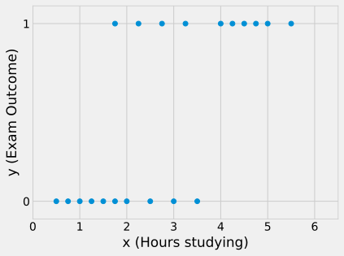
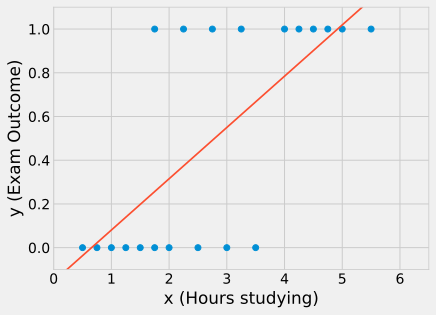
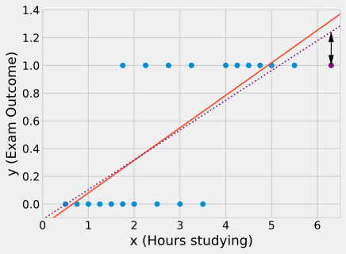
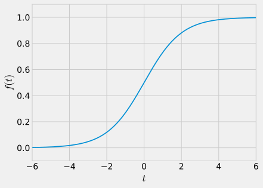
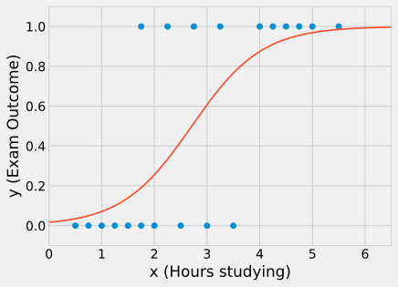
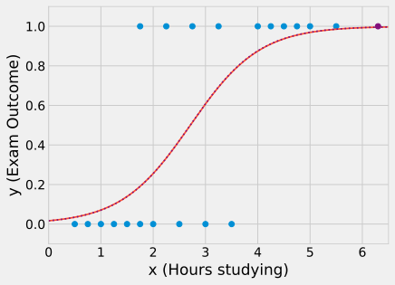
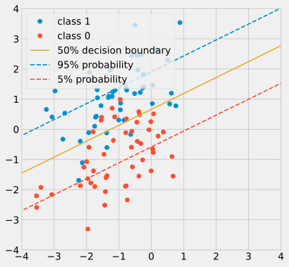

2 Logistic Regression: From Lines to Probabilities
In the previous chapter, we explored Linear Regression, which models problems where the output is a continuous variable, such as price, temperature, or height. However, many real-world problems require us to make a categorical choice, where we need to build a classifier that can answer questions like: Is this email spam or not? Does this patient have a particular disease? Which category does this news article belong to?
This chapter introduces Logistic Regression (Cox 1958), a fundamental algorithm for tackling binary classification problems, where the outcome is one of two categories (e.g., 0 or 1, true or false, pass or fail). Despite its name, logistic regression is a model for classification, not regression.
There is a vast ecosystem of classification algorithms, so why focus on this one? Logistic regression is not just a workhorse classifier in its own right; it is also the foundational building block of modern neural networks. Understanding it thoroughly will pave the way for the more complex deep learning models we encounter later.
2.1 A Motivating Example: Predicting Exam Success
Let us start with a simple, intuitive example, adapted from Wikipedia:
A group of 20 students spend between 0 and 6 hours studying for an exam. How does the number of hours spent studying affect the probability that a student will pass the exam?
The collected data consists of pairs of (Hours Studied, Result), where the result is binary: 1 for a pass and 0 for a fail.

Our goal is to build a model that, given a number of hours studied, can predict the outcome.
2.2 Why Not Linear Regression?
Our first instinct might be to apply linear regression. Although the output y is binary (y \in \{0, 1\}), we could still attempt to fit a linear model via least squares:
h_{{\bf w}}({\bf x}) = {\bf x}^{\top}{\bf w} = w_0 + w_1 x_1 + \cdots + w_p x_p
where h_{{\bf w}}({\bf x}) is the prediction given model parameters {\bf w} and input features {\bf x}. We adopt the augmented vector representation where x_0 = 1, so {\bf x} = [1, x_1, \dots, x_p]^\top and {\bf w} = [w_0, w_1, \dots, w_p]^\top.
For our 1D exam problem, the model simplifies to h_w(x) \approx 0.18 x + 0.08.

The line produces continuous values, not the discrete labels we require. We could apply a threshold at 0.5 to obtain a binary classification rule:
\hat{y} = [ {\bf x}^{\top}{\bf w} > 0.5 ] = \begin{cases} 0 & \text{if } {\bf x}^{\top}{\bf w} \le 0.5 \\ 1 & \text{if } {\bf x}^{\top}{\bf w} > 0.5 \end{cases}
However, this approach has a fundamental flaw. Linear regression optimises the mean squared error (MSE), pulling the line to match target values y \in \{0, 1\}:
\varepsilon^2 = (y - h_{\bf w}({\bf x}))^2
Consider a student who studies 100 hours and passes (y=1). The model predicts h_w(100) = 18.08. While this student is unambiguously classified as passing (18.08 > 0.5), the squared error penalty is enormous: (1 - 18.08)^2 \approx 17.1^2 \approx 292.4. The optimiser will drastically tilt and shift the decision boundary just to reduce the penalty on this correctly classified point.

The core issue is that Least Squares optimises the output {\bf x}^\top {\bf w} to match y \in \{0, 1\}, whereas we should optimise our classification rule [{\bf x}^\top {\bf w} > 0.5] to match y. We need a model designed specifically for probabilities.
2.3 Generalised Linear Models
Let us reframe the problem using the framework of Generalised Linear Models (GLMs). We seek a linear combination of the inputs, {\bf x}^{\top}{\bf w}, such that its sign predicts the outcome y in the presence of an error term \epsilon:
y = [ {\bf x}^{\top}{\bf w} + \epsilon > 0 ]
The scalar quantity {\bf x}^{\top}{\bf w} is called the risk score (or logit). It performs dimensionality reduction by compressing multiple input features into a single certainty score:
\begin{aligned} {\bf x}^{\top}{\bf w} \gg 0 &\implies y = 1 \\ {\bf x}^{\top}{\bf w} \ll 0 &\implies y = 0 \\ {\bf x}^{\top}{\bf w} \approx 0 &\implies \text{undecided} \end{aligned}
The error term \epsilon represents uncertainty on the score itself. Different assumptions about the distribution of \epsilon yield different models:
- In logistic regression, \epsilon follows a standard logistic distribution, and {\bf x}^\top {\bf w} is called the logit.
- In probit regression, \epsilon follows a standard normal distribution, and {\bf x}^\top {\bf w} is called the probit.
In practice, both models yield very similar decision boundaries. Logistic regression is preferred in machine learning because its cumulative distribution function and derivative are simpler and computationally more efficient.
2.4 The Logistic Regression Model
Consider the conditional probability that the outcome is a success (y=1) given input {\bf x} and parameters {\bf w}:
\begin{aligned} p(y=1 \mid {\bf x}, {\bf w}) &= p({\bf x}^{\top}{\bf w} + \epsilon > 0) \\ &= p(\epsilon > -{\bf x}^{\top}{\bf w}) \end{aligned}
Since the logistic distribution is symmetric about 0 (p(\epsilon > -t) = p(\epsilon < t)), this becomes:
p(y=1 \mid {\bf x}, {\bf w}) = p(\epsilon < {\bf x}^{\top}{\bf w})
The cumulative distribution function (c.d.f.) of the logistic distribution is the logistic function (or sigmoid), denoted f(t) or \sigma(t):
f(t) = \frac{1}{1 + e^{-t}}

This gives our parametric model for the probability of success:
p(y=1 \mid {\bf x}, {\bf w}) = f({\bf x}^{\top}{\bf w}) = \frac{1}{1 + e^{-{\bf x}^{\top}{\bf w}}}
and the corresponding probability of failure:
p(y=0 \mid {\bf x}, {\bf w}) = 1 - p(y=1 \mid {\bf x}, {\bf w}) = \frac{1}{1 + e^{+{\bf x}^{\top}{\bf w}}}
Exercise 2.1 Using the augmented vector representation where {\bf x} = [1, x_1, \dots, x_p]^\top, show that: p(y=0 \mid {\bf x}, {\bf w}) = h_{\bf w}(-{\bf x}) where h_{\bf w}({\bf x}) = f({\bf x}^\top {\bf w}).

Fitting this model to the student dataset shows that studying for 3 hours yields roughly a 60% probability of passing. Because f({\bf x}^\top {\bf w}) asymptotes smoothly to 1, distant positive points are not excessively penalised.

2.4.1 Linear Regression vs. Logistic Regression
- Linear Regression: Predicts the expected numerical value of y directly: h_{\bf w}({\bf x}) = \hat{y} = \mathbb{E}[y \mid {\bf x}]
- Logistic Regression: Predicts the probability of class membership: h_{\bf w}({\bf x}) = p(y=1 \mid {\bf x}, {\bf w})
2.5 Training: Maximum Likelihood and Cross-Entropy
To determine the optimal parameters {\bf w}, we apply the principle of Maximum Likelihood Estimation (MLE).
For an observation ({\bf x}_i, y_i), the probability of observing label y_i \in \{0, 1\} is:
p(y=y_i \mid {\bf x}_i, {\bf w}) = \begin{cases} h_{\bf w}({\bf x}_i) & \text{if } y_i = 1 \\ 1 - h_{\bf w}({\bf x}_i) & \text{if } y_i = 0 \end{cases}
This can be written compactly as:
p(y=y_i \mid {\bf x}_i, {\bf w}) = h_{\bf w}({\bf x}_i)^{y_i} \left(1 - h_{\bf w}({\bf x}_i)\right)^{1 - y_i}
Assuming independent observations, the likelihood across the training set is:
p({\bf y} \mid {\bf X}, {\bf w}) = \prod_{i=1}^n h_{\bf w}({\bf x}_i)^{y_i} \left(1 - h_{\bf w}({\bf x}_i)\right)^{1 - y_i}
Maximising this likelihood is equivalent to minimising the negative log-likelihood, which defines the cross-entropy loss E({\bf w}):
\begin{aligned} E({\bf w}) &= -\ln\left(p({\bf y} \mid {\bf X}, {\bf w})\right) \\ &= \sum_{i=1}^n - y_i \ln\left(h_{\bf w}({\bf x}_i)\right) - (1 - y_i) \ln\left(1 - h_{\bf w}({\bf x}_i)\right) \end{aligned}
We can also express this as the average cross-entropy by scaling by \frac{1}{n}.
2.5.1 Why Not Least Squares on the Sigmoid?
We could have considered minimising the sum of squared errors with the sigmoid: E_{LS}({\bf w}) = \sum_{i=1}^n (h_{\bf w}({\bf x}_i) - y_i)^2. In fact, this is something the Deep Learning community made that mistake for a while in its early days.
However, the non-linear nature of h_{\bf w} makes E_{LS} non-convex, introducing poor local minima and flat regions where gradients vanish. In contrast, cross-entropy coupled with the sigmoid is convex with respect to {\bf w} and yields clean, well-scaled gradients.
Also, using E_{LS} does not give the maximum Likelihood estimate. Using the cross-entropy loss does. The deep learning community rapidly realised this and moved on to adopt the cross-entropy.
2.6 Optimisation: Gradient Descent
Cross-entropy lacks a closed-form minimum, so we optimise parameters using gradient descent.
We start at {\bf w}^{(0)} and take steps along a direction {\bf v}:
{\bf w}^{(t+1)} = {\bf w}^{(t)} + \eta {\bf v}^{(t)}
Setting {\bf v} as a unit vector (\|{\bf v}\| = 1), a first-order Taylor expansion gives:
E({\bf w} + \eta {\bf v}) = E({\bf w}) + \eta \left(\frac{\partial E}{\partial {\bf w}}\right)^{\top} {\bf v} + \mathcal{O}(\eta^2)
This expression decreases fastest when {\bf v} aligns directly against the gradient:
{\bf v} = - \frac{\frac{\partial E}{\partial {\bf w}}}{\left\| \frac{\partial E}{\partial {\bf w}} \right\|}
In practice, instead of taking fixed unit steps, we scale the step size directly by the gradient magnitude. Far from the minimum, the step is large; close to the minimum, the gradient naturally shrinks to zero. The standard update rule is:
{\bf w}^{(t+1)} = {\bf w}^{(t)} - \eta \frac{\partial E}{\partial {\bf w}}
Exercise 2.2 Given that the sigmoid derivative is f'(t) = f(t)(1 - f(t)), show that the gradient of the cross-entropy loss is: \frac{\partial E}{\partial {\bf w}} = \sum_{i=1}^{n} \left(h_{\bf w}({\bf x}_i) - y_i \right) {\bf x}_i
2.7 Visualising the Decision Boundary
Consider a 2D classification problem with augmented features {\bf x} = [1, x_1, x_2]^\top and weights {\bf w} = [w_0, w_1, w_2]^\top. The probability estimate is:
h_{\bf w}({\bf x}) = \frac{1}{1 + e^{-(w_0 + w_1 x_1 + w_2 x_2)}}
Even though the sigmoid function is non-linear, logistic regression is a linear classifier. For instance, taking the decision threshold at p=0.5:
\frac{1}{1 + e^{-{\bf x}^{\top}{\bf w}}} = 0.5 \iff e^{-{\bf x}^{\top}{\bf w}} = 1 \iff {\bf x}^{\top}{\bf w} = 0
The decision boundary is the hyperplane defined by {\bf x}^{\top}{\bf w} = 0 (or w_0 + w_1 x_1 + w_2 x_2 = 0).

2.8 Multiclass Classification: Multinomial Logistic Regression
When classification involves K > 2 classes, we use Multinomial Logistic Regression (also known as Softmax Regression).
Instead of a single weight vector, we learn a parameter vector {\bf w}_k \in \mathbb{R}^{p+1} for each class k \in \{1, \dots, K\}. We organise these column vectors into a weight matrix:
{\bf W} = [{\bf w}_1, \dots, {\bf w}_K] \in \mathbb{R}^{(p+1) \times K}
The probability that input {\bf x} belongs to class C_k is given by the softmax function:
p(y=C_k \mid {\bf x}, {\bf W}) = \mathrm{softmax}({\bf W}^\top {\bf x})_k = \frac{\exp({\bf x}^\top {\bf w}_k)}{\sum_{j=1}^{K} \exp({\bf x}^\top {\bf w}_j)}
where \mathrm{softmax}: \mathbb{R}^K \to \mathbb{R}^K is defined as:
\mathrm{softmax}({\bf t})_k = \frac{\exp(t_k)}{\sum_{j=1}^K \exp(t_j)}
The softmax function takes the vector of linear logits and normalises them into a valid probability distribution summing to 1.
2.8.1 Worked Example
For 3 classes \{A, B, C\}, suppose an input {\bf x} produces the scores: {\bf x}^\top {\bf w}_A = -1.2, {\bf x}^\top {\bf w}_B = +3.1, and {\bf x}^\top {\bf w}_C = -0.9. Passing these logits through softmax yields:
{\bf x} \to \begin{bmatrix} {\bf x}^{\top}{\bf w}_A = -1.2 \\ {\bf x}^{\top}{\bf w}_B = +3.1 \\ {\bf x}^{\top}{\bf w}_C = -0.9 \end{bmatrix} \xrightarrow{\text{softmax}} \begin{bmatrix} p(A \mid {\bf x}) = \frac{e^{-1.2}}{e^{-1.2} + e^{3.1} + e^{-0.9}} = 0.0131 \\ p(B \mid {\bf x}) = \frac{e^{3.1}}{e^{-1.2} + e^{3.1} + e^{-0.9}} = 0.9691 \\ p(C \mid {\bf x}) = \frac{e^{-0.9}}{e^{-1.2} + e^{3.1} + e^{-0.9}} = 0.0177 \end{bmatrix}
Note that we have indeed p(A \mid {\bf x}) + p(B \mid {\bf x}) + p(C \mid {\bf x})=1.
2.8.2 Multinomial Cross-Entropy Loss
For a single observation, the likelihood across all classes is written using indicator exponents:
p(y \mid {\bf x}, {\bf W}) = \prod_{k=1}^K p(y=C_k \mid {\bf x}, {\bf W})^{[y=C_k]}
where [y=C_k] equals 1 if the true label is C_k and 0 otherwise. For n independent training examples, the total dataset likelihood is:
p({\bf y} \mid {\bf X}, {\bf W}) = \prod_{i=1}^{n} \prod_{k=1}^{K} p(y_i=C_k \mid {\bf x}_i, {\bf W})^{[y_i=C_k]}
Taking the negative log-likelihood produces the multinomial cross-entropy (or categorical cross-entropy) loss function:
E({\bf W}) = -\ln\left(p({\bf y} \mid {\bf X}, {\bf W})\right) = - \sum_{i=1}^{n} \sum_{k=1}^K [y_i=C_k] \ln\left(p(y_i=C_k \mid {\bf x}_i, {\bf W})\right)
Minimising this loss with gradient descent optimises the K weight vectors jointly.
Note that, although we use different terms—multinomial cross-entropy for multiple classes and binary cross-entropy for the two-class problem—both describe the exact same mathematical entity: the negative log-likelihood -\ln\left(p({\bf y} \mid {\bf X}, {\bf W})\right). For K=2, the multinomial sum collapses algebraically into the binary formula. The distinction in terminology primarily reflects the representation of the target y: a single scalar y_i \in \{0, 1\} for binary classification, versus a one-hot indicator vector for multiple classes.
2.9 Takeaways
- Logistic Regression is a linear model designed for binary categorical classification, not regression.
- Instead of directly predicting continuous outputs, the model predicts the probability of class membership.
- It maps a linear score (the logit) to (0, 1) via the sigmoid function.
- Maximising the likelihood of the training data is equivalent to minimising the cross-entropy loss function.
- Parameter optimisation is performed iteratively using gradient descent.
- The natural extension to multiple classes is Multinomial Logistic Regression, which uses the softmax activation and multinomial cross-entropy loss.
Exercises
Exercise 2.3 Given weights w_0=0.1, w_1=1, w_2=2, what is the probability p that an observation with feature values x_1=0.3, x_2=0.4 belongs to class 1?
Exercise 2.4 What do large values of the negative log-likelihood indicate? (Select all correct answers)
- That the likelihood of the outcome to be of class 1 is high.
- That the likelihood of the outcome to be of class 0 is high.
- That the statistical model fits the data well.
- That the statistical model is a poor fit of the data.
Exercise 2.5 Consider a generalised linear model for a binary classification problem whose accuracy on the training set is 100% (every single sample is correctly classified using the 0.5 threshold). What is the maximum value that the average cross-entropy on the training set can take?